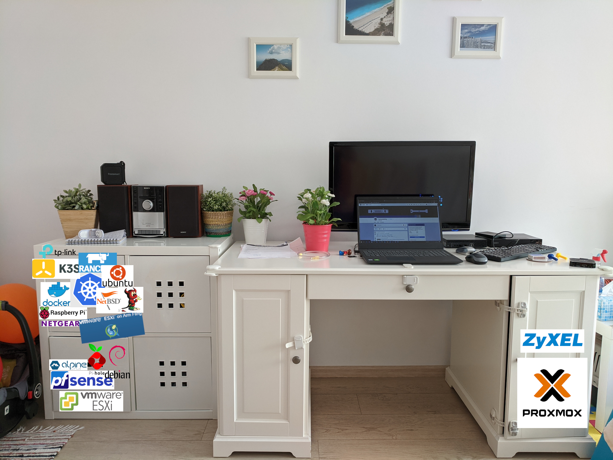

### The very FIRST “incarnation”

A discreet homelab, hidden away from curious toddlers' handsThis was also the largest one, of course. I was overly-enthusiastic and didn’t really have any precise goals. A Raspberry Pi cluster was also included, because I found the idea to be very fascinating and cool.
- 1 x Atrust Intel-based thin client (an older, refurbished and fanless machine)
- 1 x SuperMicro A1SAi mini-server based on the A1SRi-2358F motherboard, running VMWare ESXi (hosting an instance of pfSense that takes care of routing and LAN segments)
- 1 x Proxmox VE Server (this is my former desktop that got converted to a server), based on an AMD Ryzen 5 CPU with 32 GB DDR4 & almost 1 TB SSD storage
- 1 x Dell OptiPlex 3050 Micro (7th gen i5, 8 GB DDR4, Windows 10 Pro) acting as a media & file server (it’s linked to the TV and it also runs a Syncthing server to which our mobile phones upload photos - instead of relying on Google Photos, OneDrive, etc.)
- 1 x TP-Link TL-WR841N/ND v7 (my 10-year old WiFi router, now running OpenWRT and taking care of the wireless network associated with the lab)
- 1 x Zyxel 5-port Gigabit managed switch
Building the first lab
I first took the Supermicro server, cleaned it up and placed it in the bottom drawer of a simple IKEA living room organizer. I actually dismantled the back of the drawer (made of pretty solid plastic) in order to have access to all ports and help with ventilation.
I placed the power sockets on top of it in a manner that doesn’t cover the server’s fans. I use two separate multiple socket thingies, each with an ON/OFF button. One of them is for the Raspberry Pi cluster, because I want to be able to shut that thing off when I’m not actively working with it.
What did I use it for?
Well, the Supermicro server had VMWare ESXi installed on it. pfSense ran in a VM and was binded to three physical NICs on the server (named WAN, LAB & CLUSTER). This VM handled Internet traffic coming through from the crappy router provided by my ISP. I also ran a few other lightweight VMs on this server, like Pi-hole & Alpine Linux.
The Raspberry Pis were used for learning Kubernetes, Docker, Ansible, k3s/Rancher and toying around with NetBSD’s Kyua/ATF (an automated testing framework for Net & FreeBSD - this was done on the RPi 2s). One of the RPis ran VMWare ESXi for ARM, for testing & more (lighter) virtualization. The Atrust thin client was linked to the cluster and it was mainly used as a machine for coordinating the boards (Ansible & the like).
Dell OptiPlex 3050 Micro is a great mini-PC that’s used as a media center (on Windows 10 Pro) for streaming services. It also ran Syncthing (which we used at the time, before moving to NextCloud).
Finally, the Proxmox VE server was used for more hardcore virtualization, mainly for studying/re-learning Windows & UNIX servers at a more “business-like” level (Directory Services in mixed environments, unattended Windows deployments, Hyper-V administration, etc.). Why did I move on?
Well, the Raspberry Pi cluster was too much of a mess for my taste. The RPi 4 gets WAY too hot so coolers were on almost 24/7 and I quickly noticed that, for my needs, the same computing power could be achieved with computers that did not require such complexity. After this, I replaced the cluster with two Dell Wyse mini-PCs.